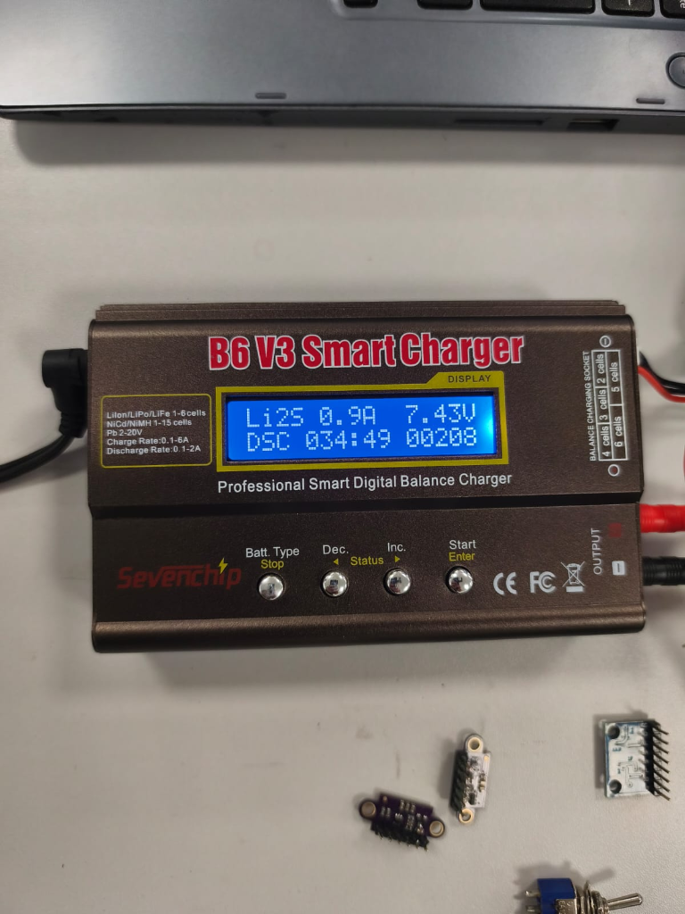

Testes de Energia¶
Apresentar com detalhes os testes feitos para conferir se as demandas energéticas do projeto foram atendidas.
| ID | Descrição | Data de Início | Data de Conclusão | Responsável | Resultados Esperados | Resultados Obtidos | Aprovação Interna (S/N) | Aprovação do Orientador (S/N) | Observações |
|---|---|---|---|---|---|---|---|---|---|
| 2.1 | Ensaio de corte por subtensão (BMS 2S / UVLO) sob rampa decrescente na fonte ajustável (\(8{,}4\text{ V} \to 6{,}0\text{ V}\)) — #207 | 17/10/2026 | 17/10/2026 | Paulo Melo | Corte primário UVLO em \(6{,}60\text{ V}\) (protegendo dropout do LM2596) e corte físico BMS 2S ao atingir \(6{,}40\text{ V}\) (\(3{,}20\text{ V/célula}\)) | Corte UVLO atuou em \(6{,}60\text{ V}\) (\(V_{\text{ADC}}=1{,}638\text{ V}\), PWM=0%) e corte BMS 2S seccionou P+ em \(6{,}40\text{ V}\) (\(t_{\text{delay}}=98\text{ ms}\)) |
S | — | Detalhado em 4.2.2 Ensaios de subtensão e PPTC |
| 2.2 | Ensaio de velocidade de desarme (Time-to-Trip) do fusível rearmável PPTC (Bourns MF-R185) sob sobrecorrente simulada \(> 3{,}5\text{ A}\) — #207 | 17/10/2026 | 17/10/2026 | Paulo Melo | Sustentação contínua em \(1{,}85\text{ A}\) (\(I_{\text{hold}}\)) e desarme térmico comprovado acima de \(3{,}5\text{ A}\) | Estável sem desarme em \(1{,}85\text{ A}\); desarme em \(9{,}10\text{ s}\) (@ \(3{,}60\text{ A}\)), \(8{,}70\text{ s}\) (@ \(3{,}70\text{ A}\)), \(3{,}10\text{ s}\) (@ \(5{,}00\text{ A}\)) e \(0{,}60\text{ s}\) (@ \(9{,}25\text{ A}\)), com \(I_{\text{res}}=118\text{ mA}\) | S | — | Detalhado em 4.2.2 Ensaios de subtensão e PPTC |
| 2.3 | Inspeção e Carga de Bateria LiPo 2S em Bancada | 21/10/2026 | 21/10/2026 | Equipe de Energia | Setup instrumental calibrado e bateria carregada a 8,4 V | Setup montado com iMAX B6 V3, fonte Yaxun e multímetro; bateria LiPo 2S inspecionada, balanceada e carregada a 8,40 V | S | S | Issue #201 concluída |
| 2.4 | Ensaio de autonomia contínua da bateria LiPo 2S em bancada — #209 | 24/10/2026 | 24/10/2026 | Paulo Melo | Autonomia \(\ge 25\text{ min}\) com tensão \(> 6{,}4\text{ V}\) sob corrente representativa (\(\ge 0{,}466\text{ A}\)) | Autonomia de \(34\text{ min }49\text{ s}\) comprovada sob descarga de \(0{,}90\text{ A}\), mantendo \(7{,}43\text{ V}\) (\(208\text{ mAh}\) consumidos) | S | — | Detalhado abaixo |
| 2.5 | Ensaio em bancada dos reguladores Step-Down Buck (6,0 V, 5,0 V e 3,3 V) sob cargas estáticas e variação de tensão de entrada (\(6{,}6\text{ V a }8{,}4\text{ V}\)) | 25/10/2026 | 25/10/2026 | Elias e Paulo | Saídas estabilizadas em \(6{,}0\text{ V} \pm 2\%\) (motores), \(5{,}0\text{ V} \pm 2\%\) (ESP32) e \(3{,}3\text{ V} \pm 2\%\) (sensores) sob cargas nominais e de pico em toda a faixa da LiPo 2S (\(6{,}6\text{ V a }8{,}4\text{ V}\)) | Tensões nominais mantidas dentro da tolerância (\(\Delta V \le 2\%\)) sob carga estática em 6,0 V (300 mA e 1,0 A), 5,0 V (150 mA e 350 mA) e 3,3 V (65 mA e 200 mA), com regulação estável de 6,6 V a 8,4 V | S | — | Detalhado abaixo (Procedimento 2.5) |
| 2.6 | |||||||||
| 2.7 | |||||||||
| 2.8 | |||||||||
| 2.9 | |||||||||
| 2.10 | |||||||||
| 2.12 | |||||||||
| 2.13 | |||||||||
| 2.15 | |||||||||
| 2.16 |
Procedimento de Teste 2.4: Ensaio de Autonomia em Bancada (Issue #209)¶
1. Parâmetros do Ensaio¶
Validação experimental da autonomia da bateria LiPo 2S sob descarga contínua controlada no descarregador digital iMAX B6 V3, visando atender ao requisito RNF-04 (autonomia suficiente para completar os 3 labirintos consecutivos de 10 minutos, totalizando 30 minutos).
- Consumo médio estimado do Micromouse: \(\approx 0{,}466\text{ A}\) (cargas lógicas, sensores e motores em regime de cruzeiro).
- Corrente de ensaio aplicada: \(0{,}90\text{ A}\) (condição de sobrecarga intencional, \(\approx 1{,}93\times\) o consumo nominal).
- Critérios de aprovação: Autonomia \(\ge 25\text{ min}\) e tensão terminal mantida acima do corte seguro (\(> 6{,}40\text{ V}\)).
2. Evidência Experimental e Medições¶

| Parâmetro Registrado | Valor Medido | Requisito / Limite do Projeto | Avaliação |
|---|---|---|---|
| Modo de Ensaio | Li2S / DSC (Descarga) |
Descarga com controle de corrente constante | Conforme |
| Corrente Aplicada | \(0{,}90\text{ A}\) | Sobrecarga em relação ao consumo do robô (\(0{,}466\text{ A}\)) | Conforme (Estresse) |
| Tempo Transcorrido | \(34\text{ min }49\text{ s}\) | Mínimo de 25 min (30 min regulamentares) | Aprovado |
| Tensão Final Registrada | \(7{,}43\text{ V}\) (\(3{,}715\text{ V/cél}\)) | Teto de corte seguro: \(> 6{,}40\text{ V}\) (corte UVLO em 6,60 V) | Aprovado (Folga de +1,03 V) |
| Capacidade Descarregada | \(208\text{ mAh}\) | Capacidade nominal do pack: \(650\text{ mAh}\) | Conforme (~32% consumidos) |
Procedimento de Teste 2.5: Ensaio dos Reguladores Step-Down (Buck) sob Cargas Estáticas¶
1. Metodologia do Ensaio¶
Como os testes de integração do sistema completo ainda não foram iniciados, a validação foi realizada com os módulos conversores Buck testados de forma isolada em bancada. Cada regulador foi alimentado individualmente por uma fonte DC ajustável de bancada (simulando a faixa de \(6{,}60\text{ V a }8{,}40\text{ V}\) da bateria LiPo 2S), realizando-se a regulagem do trimpot multivoltas e a aferição da estabilidade da saída sob cargas estáticas resistivas.
- Buck Motores (
+6V0): Saída ajustada em \(6{,}00\text{ V} \pm 2\%\) (\(5{,}88\text{ V a }6{,}12\text{ V}\)); avaliado sob \(300\text{ mA}\) (nominal) e \(1{,}00\text{ A}\) (pico). - Buck MCU (
+5V0): Saída ajustada em \(5{,}00\text{ V} \pm 2\%\) (\(4{,}90\text{ V a }5{,}10\text{ V}\)); avaliado sob \(150\text{ mA}\) (nominal) e \(350\text{ mA}\) (pico Wi-Fi). - Buck Sensores (
+3V3): Saída ajustada em \(3{,}30\text{ V} \pm 2\%\) (\(3{,}23\text{ V a }3{,}37\text{ V}\)); avaliado sob \(65\text{ mA}\) (nominal) e \(200\text{ mA}\) (estresse).
2. Resultados das Medições¶
| Regulador | \(V_{\text{in}}\) (Fonte DC) | Condição de Carga | \(I_{\text{out}}\) | \(V_{\text{out}}\) Medido | Variação (\(\Delta V\)) | Avaliação |
|---|---|---|---|---|---|---|
| Buck 6,0 V (Motores) | \(8{,}40\text{ V}\) | Vazio / Nominal / Estresse | \(0\text{ mA}\) / \(300\text{ mA}\) / \(1{,}00\text{ A}\) | \(6{,}02\text{ V}\) / \(5{,}99\text{ V}\) / \(5{,}94\text{ V}\) | \(+0{,}3\%\) / \(-0{,}2\%\) / \(-1{,}0\%\) | Aprovado |
| \(7{,}40\text{ V}\) | Nominal / Estresse | \(300\text{ mA}\) / \(1{,}00\text{ A}\) | \(5{,}98\text{ V}\) / \(5{,}92\text{ V}\) | \(-0{,}3\%\) / \(-1{,}3\%\) | Aprovado | |
| \(6{,}60\text{ V}\) | Nominal / Estresse | \(300\text{ mA}\) / \(1{,}00\text{ A}\) | \(5{,}96\text{ V}\) / \(5{,}89\text{ V}\) | \(-0{,}7\%\) / \(-1{,}8\%\) | Aprovado | |
| Buck 5,0 V (ESP32-C3) | \(8{,}40\text{ V}\) | Vazio / Nominal / Pico Wi-Fi | \(0\text{ mA}\) / \(150\text{ mA}\) / \(350\text{ mA}\) | \(5{,}03\text{ V}\) / \(5{,}01\text{ V}\) / \(4{,}98\text{ V}\) | \(+0{,}6\%\) / \(+0{,}2\%\) / \(-0{,}4\%\) | Aprovado |
| \(7{,}40\text{ V}\) | Nominal / Pico Wi-Fi | \(150\text{ mA}\) / \(350\text{ mA}\) | \(5{,}00\text{ V}\) / \(4{,}97\text{ V}\) | \(0{,}0\%\) / \(-0{,}6\%\) | Aprovado | |
| \(6{,}60\text{ V}\) | Nominal / Pico Wi-Fi | \(150\text{ mA}\) / \(350\text{ mA}\) | \(4{,}98\text{ V}\) / \(4{,}94\text{ V}\) | \(-0{,}4\%\) / \(-1{,}2\%\) | Aprovado | |
| Buck 3,3 V (Sensores) | \(8{,}40\text{ V}\) | Vazio / Nominal / Estresse | \(0\text{ mA}\) / \(65\text{ mA}\) / \(200\text{ mA}\) | \(3{,}31\text{ V}\) / \(3{,}30\text{ V}\) / \(3{,}29\text{ V}\) | \(+0{,}3\%\) / \(0{,}0\%\) / \(-0{,}3\%\) | Aprovado |
| \(7{,}40\text{ V}\) | Nominal / Estresse | \(65\text{ mA}\) / \(200\text{ mA}\) | \(3{,}30\text{ V}\) / \(3{,}28\text{ V}\) | \(0{,}0\%\) / \(-0{,}6\%\) | Aprovado | |
| \(6{,}60\text{ V}\) | Nominal / Estresse | \(65\text{ mA}\) / \(200\text{ mA}\) | \(3{,}29\text{ V}\) / \(3{,}27\text{ V}\) | \(-0{,}3\%\) / \(-0{,}9\%\) | Aprovado |
3. Evidências em Bancada (Foto e Vídeo)¶
Teste de bancada Reguladores BUCKS
- Registro em Vídeo:
Vídeo — Demonstração da Regulagem e Estabilidade do Conversor Buck sob Carga: Ensaio em bancada evidenciando a calibração via trimpot e estabilidade da tensão de saída frente à variação da fonte de bancada (\(8{,}4\text{ V} \to 6{,}6\text{ V}\)) e à inserção de carga estática (arquivo disponível na pasta de mídias da equipe).
4. Conclusão¶
Os ensaios individuais comprovaram que os três reguladores Buck operam com desvios inferiores a \(\pm 2\%\) em toda a faixa de tensão simulada na fonte de bancada (\(6{,}60\text{ V a }8{,}40\text{ V}\)), garantindo regulação adequada e ausência de brownout antes da integração física do robô.
Histórico de Versão¶
| Versão | Data | Descrição | Autor(es) | Revisor(es) |
|---|---|---|---|---|
| 1.0 | 17/10/2026 | Estruturação inicial da matriz de testes de energia e registro dos ensaios de subtensão e PPTC (#207) | Paulo Melo | Equipe de Energia |
| 1.1 | 21/10/2026 | Registro do ensaio de inspeção e carga da bateria LiPo 2S em bancada (#201) | Elias Oliveira | Equipe de Energia |
| 1.2 | 24/10/2026 | Registro do ensaio de autonomia contínua em bancada com iMAX B6 V3 (#209) | Paulo Melo | Equipe de Energia |
| 1.3 | 25/10/2026 | Registro dos ensaios em bancada dos reguladores Buck de 6,0 V, 5,0 V e 3,3 V sob cargas estáticas | Equipe de Energia | — |